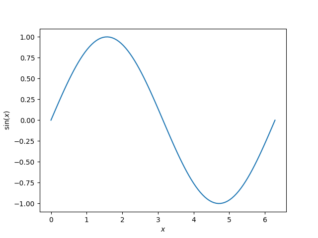

Note
Click here to download the full example code
Plotting sin¶
This is a general example demonstrating a Matplotlib plot output, embedded
rST, the use of math notation and cross-linking to other examples. It would be
useful to compare the source Python file with the
output below.
Source files for gallery examples should start with a triple-quoted header docstring. Anything before the docstring is ignored by Sphinx-Gallery and will not appear in the rendered output, nor will it be executed. This docstring requires a rST header, which is used as the title of the example and to correctly build cross-referencing links.
Code and embedded rST text blocks follow the docstring. The first block
immediately after the docstring is deemed a code block, by default, unless you
specify it to be a text block using a line of #’s or #%% (see below).
All code blocks get executed by Sphinx-Gallery and any output, including plots
will be captured. Typically, code and text blocks are interspersed to provide
narrative explanations of what the code is doing or interpretations of code
output.
Mathematical expressions can be included as LaTeX, and will be rendered with
MathJax. To include displayed math notation, use the directive .. math::.
To include inline math notation use the :math: role. For example, we are
about to plot the following function:
Here the function \(\sin\) is evaluated at each point the variable \(x\) is defined. When including LaTeX in a Python string, ensure that you escape the backslashes or use a raw docstring. You do not need to do this in text blocks (see below).
# Code source: Óscar Nájera
# License: BSD 3 clause
import numpy as np
import matplotlib.pyplot as plt
x = np.linspace(0, 2 * np.pi, 100)
y = np.sin(x)
plt.plot(x, y)
plt.xlabel(r'$x$')
plt.ylabel(r'$\sin(x)$')
plt.savefig("results/sin_demo.png")
plt.close()
To include embedded rST, use a line of >= 20 #’s or #%% between your
rST and your code (see embedding_rst). This separates your example
into distinct text and code blocks. You can continue writing code below the
embedded rST text block:
print('This example shows a sin plot!')
Out:
This example shows a sin plot!
results/sin_demo
Total running time of the script: ( 0 minutes 0.494 seconds)